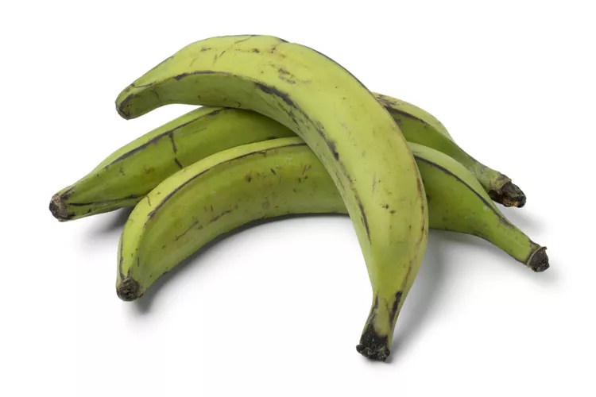
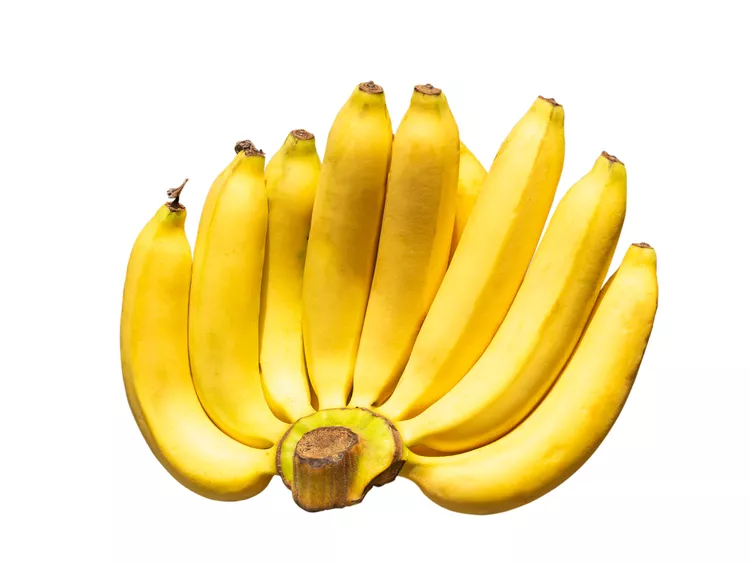
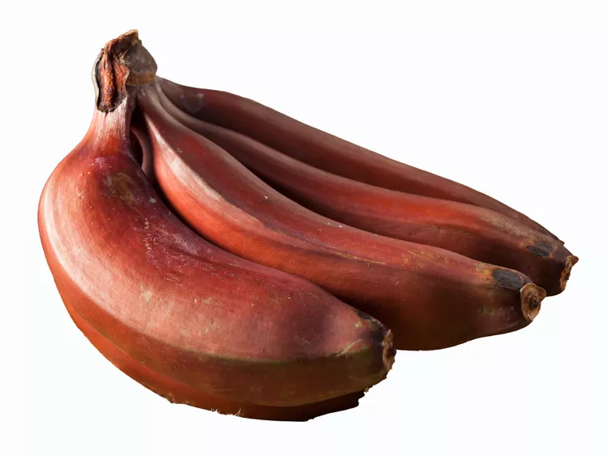
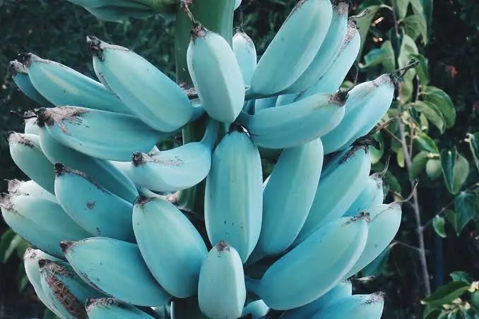
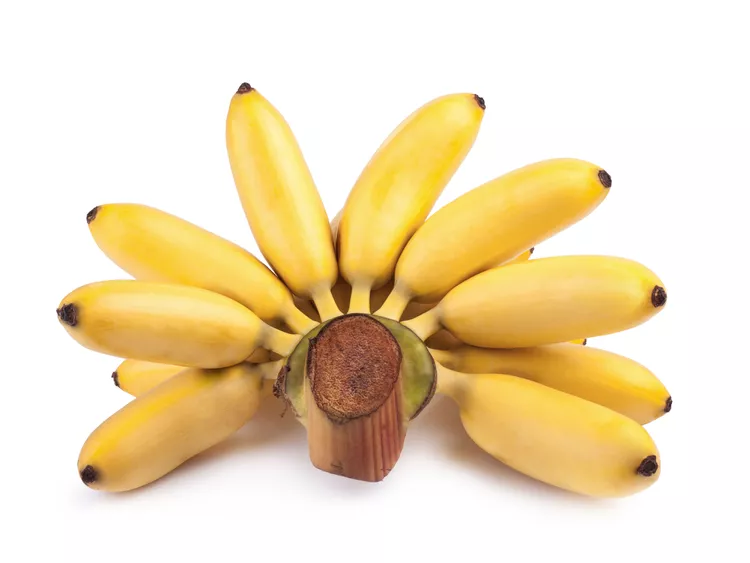

Bananas
Definition of 'Banana':
A banana is a long, curved fruit with thick skin and soft, sweet flesh. It grows in large bunches on tall, treelike tropical plants from the genus Musa.

A banana is a long, curved fruit with thick skin and soft, sweet flesh. It grows in large bunches on tall, treelike tropical plants from the genus Musa.
1. Bananas are a type of berry.
2. Bananas grow upwards against gravity, forming their curved shape.
3. Most Cavendish bananas are sterile and grown from cuttings, making every single one a genetic clone.
4. A banana is roughly 75% water.
5. Bananas are slightly radioactive.
Color: Green, yellow, or black
Flavor: Mild to sweet
Texture: Firm to creamy
Best Uses: Savory dishes of all kinds

Color: Yellow peel, white flesh
Flavor: Slightly sweet
Texture: Lightly creamy
Best Uses: Eaten raw, banana splits, banana pudding, or banana bread

Color: Red peel, pale to pinkish flesh
Flavor: Sweet
Texture: Creamy
Best Uses: Eaten raw, cooked and added to savory dishes

Color: Light yellow peel when fully ripen, pale flesh
Flavor: Slightly tart
Texture: Soft serve ice cream
Best Uses: Smoothies, mashed and used in banana bread

Color: Light yellow peel, pale flesh
Flavor: Sweet, honey-like taste
Texture: Creamy
Best Uses: Left raw and used in desserts like banana splits or banana pudding

Bananas are believed to have originated up to 10,000 years ago
and some scientists believe they may have been the world's first fruit.
The first bananas are thought to have grown in the region that includes the
Malaya Peninsula, Indonesia, the Philippines and New Guinea. From here, traders and
travelers took them to India, Africa and Polynesia. There were references to bananas
from 600 BC when Buddhist scriptures, known as the Pali Canon, noted Indian traders travelling
through the Malaysian region had tasted the fruit and brought plants back with them. In 327 BC, when
Alexander The Great and his army invaded India, he discovered banana crop in the Indian Valleys.
After tasting this unusual fruit for the first time, he introduced this new discovery to the Western world.
Energy: 371kJ (89 kcal)
Carbohydrates: 22.84g
Sugars: 12.23g
Dietary Fiber: 2.6g
Fat: 0.33g
Protein: 1.09g
Vitamin A equiv. - 19.2μg
Thiamine (B1) - 0.031 mg
Riboflavin (B2) - 0.073
Niacin (B3) - 0.665 mg
Pantothenic acid (B5) - 0.334 mg
Vitamin B6 - 0.4 mg
Folate (B9) - 20 μg
Choline - 9.8 mg
Vitamin C - 8.7mg
Copper - 0.101 mg
Iron - 0.26 mg
Magnesium - 27 mg
Manganese - 0.27 mg
Phosphorus - 22 mg
Potassium - 358 mg
Sodium - 1 mg
Zinc - 0.15 mg
Some traditional foods with bananas include:
1. Alcapurria - A sort of fritter from Puerto Rico
2. Banana Split - A sweet ice-cream desert with peeled bananas on the sides
3. Bánh chuối - A sweet banana pancake from Vietnam
4. Boli - A roasted plantain snack from Nigeria
5. Bananacue - A barbecue-banana mix from the Phillipines